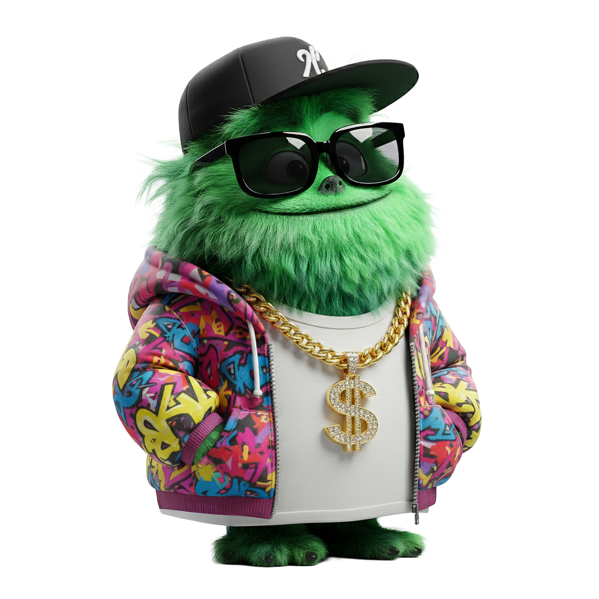

Hoi Jeroen,Waar mag ik een column over schrijven vandaag?
Nog geen columns. Schrijf je eerste! ✍️

Coco
De sleutel wordt alleen in jouw browser bewaard (localStorage) en nooit ergens naartoe gestuurd.
Sleutel ophalen via console.anthropic.com
Coco maakt een concept van max. 500 woorden, in jouw stijl, vaak rond één metafoor.
🔑 API-sleutel wijzigen
Coco is aan het schrijven… even geduld 🪶